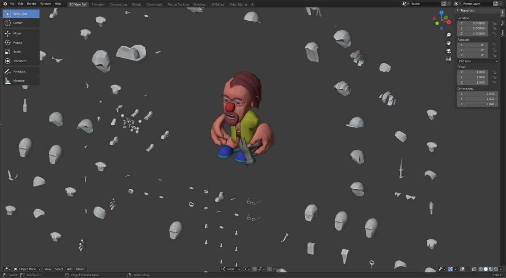
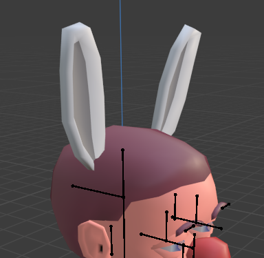
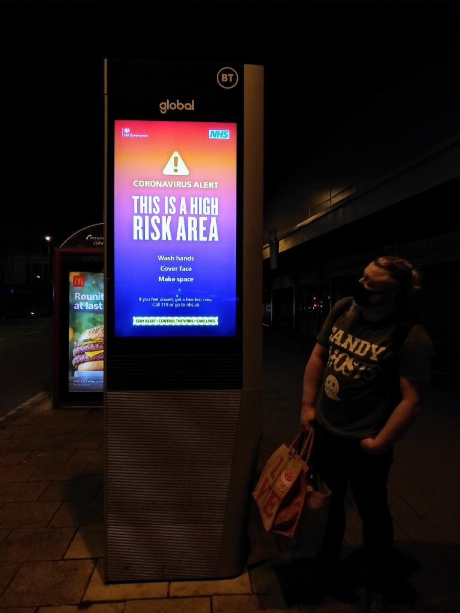

https://twitter.com/wetgenes/status/1311039063818985473 Also @shi says you should play the game "Vibrant, Natural or Muted." Make your choice while it loads and see if you can win an eye full when it finishes and the colors are revealed.
Made a CSS webpage loading animation progress bar type thing for "unnameable project"
Refresh for random images and retweet if you can hear it loading :)
Pig Nose Check Wife beater Check Hammer Check Fluffy Slippers Check... http://notshi.github.io/printscreen/blog/2020-09-29-09-42-16-junk-kriss/

busy rebuilding potato parts... http://notshi.github.io/printscreen/blog/2020-09-27-19-13-06-junk-kriss/ 
https://twitter.com/tametick/status/1310225560543662082 @tametick oh that's easy, some simple terms have been redefined over the last couple of decades.
A game can now be anything eg: screensaver / story / opera / cake
and rogue means game.
Hope that helps.
I don't think I play simulator games properly. EG:
In driving simulators If I want to turn left I just find a wall that is heading in that direction and drive into it.
In survival simulators I will jump of a mountain and respawn with a half full belly rather than bother eating.
https://twitter.com/derElbi/status/1307641467972837381 @derElbi @nachimir Multiple everything, it's Mr Potato Head style so contiguous skinning of parts is not a problem.
Multiple things just get calmed down a bit to help with a simpler UI.
I should say this is a rebuild from something we made 15 years ago and last time we went with hat :)
https://twitter.com/nachimir/status/1307624427933364224 @nachimir Ah but you see technically the avatar is no more human than it is rabbit. The human ears are as much an act of dress up as the rabbit ears are.
The only way one could tell that the avatar was a rabbit would be if it had rabbit ears, making your taxonomical criteria circular.
https://twitter.com/derElbi/status/1307623361539985409 @derElbi It's an avatar creator sort of thing, so yes, hat was my first thought.
but
unlike hats there are not a lot of options for ears, so if rabbit ears are not ears then what does get to go in the ear bucket?
Why do I even have an ear bucket?
Todays argument:
Are "Bunny Ears" ears or are they a hat? 
3DPrint D4 Numeric

Dice seem like a good first thing to 3D print, small/fast and they do have an actual use. So this was one of the first things I experimented with.
The indent of the glyphs may seem a little deep (some of the numbers almost intersect) but it really is necessary for useable legibility. For extra legibility you could try and fill in the glyphs with another material after printing.
The blend file is setup to use instanced text objects to cut the letters into the main object. Which means you could adjust the font/size/etc if you know how to blender. If you do not know how to blender then you want the STL file and will need to slice it yourself.
I have an Ender 3 Pro loaded with PLA and I use https://slic3r.org/ with a layer height of 0.25mm which seems a good compromise between speed and quality for a 0.4mm nozzle.
From various test prints I discovered that you can actually get away here with a 0% infill but a 100% infill seems best as it gives the die a little bit of heft and helps to keep the weight balanced.
I recommend not bothering with support or a raft just be extra careful with bed calibration as it is very easy to squash the bottom layer into the print bed rendering its numbers illegible.
https://twitter.com/MillisBrent/status/1300185767327588352 @MillisBrent Shi is all good, still on twitter as @shi but just not really paying much attention here.
Or, you know, social media in general.
https://twitter.com/MillisBrent/status/1300035377575505925 @MillisBrent I really loved "Cast a deadly spell" but I'm afraid it is just outside the 80s into the early 90s.
Still the movie has literally everything in it :P
The title say Judge Dredd but the content is mostly 2000AD classics and for people that do not pay attention to 2000AD I highly recommend Brink which is most wonderful :)
https://www.humblebundle.com/books/judge-dredd-2000-ad-more-books
Yo mama so fat she comes with an external DVD drive.
The guillotine is a disgusting French invention and I support traditional British values. https://twitter.com/shitlondon/status/1296850403347365889
Fun fact!
An American werewolf in Paris is one of, if not, the second best werewolf movies. https://twitter.com/AlanBaxter/status/1297132880737394690
Modern technology. 
https://twitter.com/derElbi/status/1295415156630073345 @derElbi in theory sure, in reality connecting the internet of shit to your brain is a snowcrash future.
after the first few million casualties all bio tech will be air gaped :)